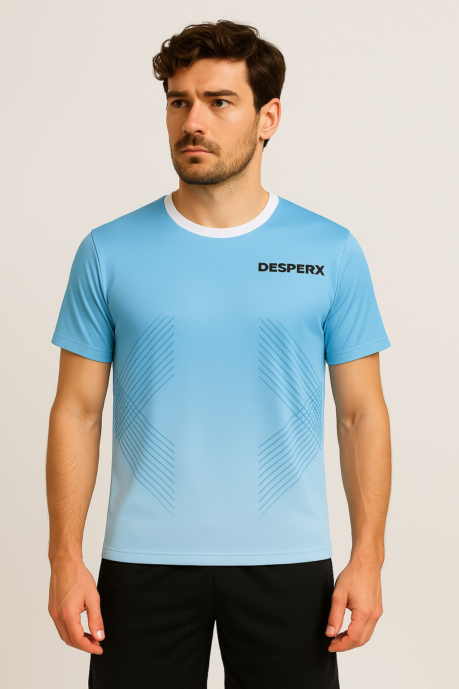
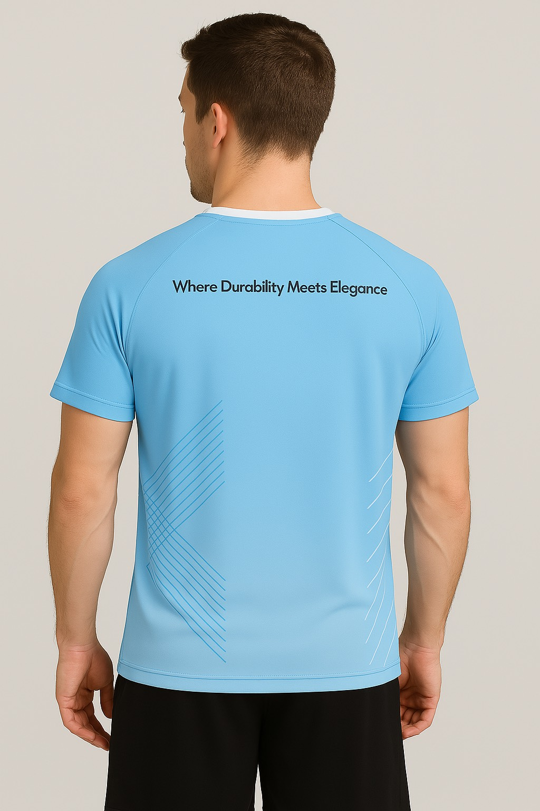

DESPERX Bleu
Un design pur, une performance sans compromis.
Le t-shirt DESPERX bleu incarne la fraîcheur, l’élégance et la liberté de mouvement.
- 🌀 Matière ultra-légère et respirante
- ✂️ Coupe moderne et sportive
- 🏓 Parfait pour briller à la table comme dans la rue